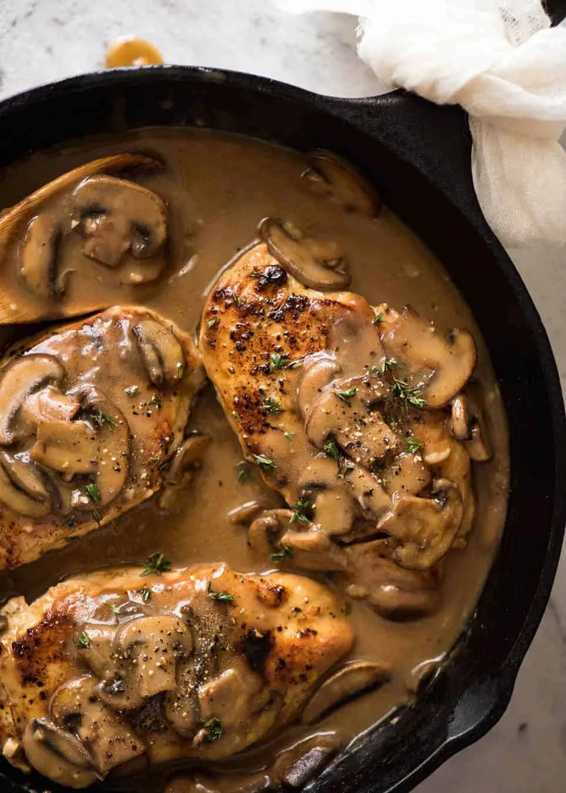

Chicken with mushrooms

Chicken with Mushrooms
You can use any kind of chicken, bone in, boneless, thighs, breasts, etc. Just make sure your chicken is fully cooked before serving. You can also substitue balsalmic vinegar with worchestershire sauce, white or red wine, whatever acidic fluid you like.
ingredients
- 1 Tablespoon olive oil
- 1 Lb of chicken I preferable boneless skinless thighs
- 1 teaspoon butter
- 1/2 onion finely diced
- 8 oz of sliced mushrooms
- 3 Tablespoons basalmic vinegar
- 1 1/2 cup chiken stock or broth
- however much chopped fresh parsly you like
Instructions:
- Heat oil in a large skillet or dutch oven over medium-high heat
- Add chicken and saute for 3 minutes per side until well seared, then remove from pan and set aside
- Add butter to the pan and let it melt
- Add onions and saute for 2 minutes to deglaze the pan
- Add mushrooms and saute for another 3-5 minutes until liquid releases, stirring frequently
- Add balsamic vinegar and cook for 1 minute, then add the chicken back to the pan, covering it with mushrooms
- Pour chicken broth or stock into the pan and bring to a boil, then reduce heat to medium-low, cover tightly and let simmer for 25 minutes
- Serve with a garnish of fresh parsley over rice or noodles or whatever